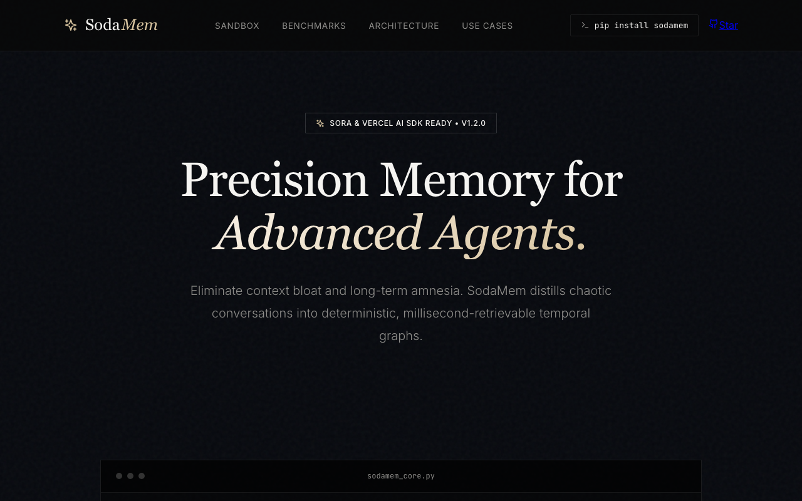
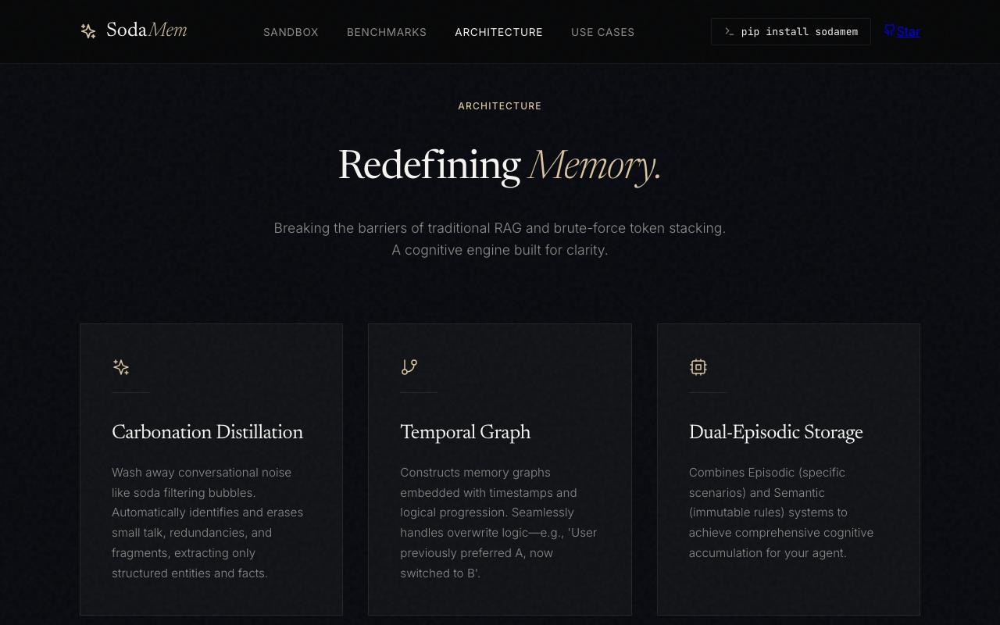
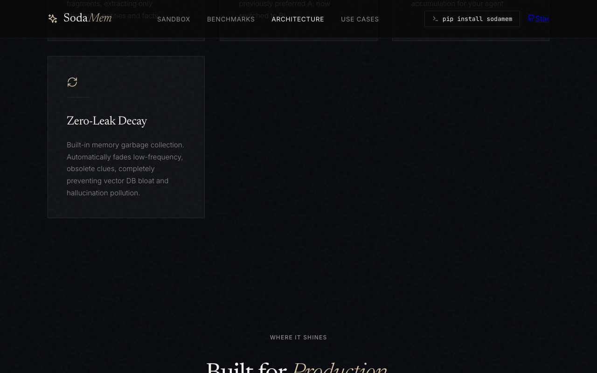
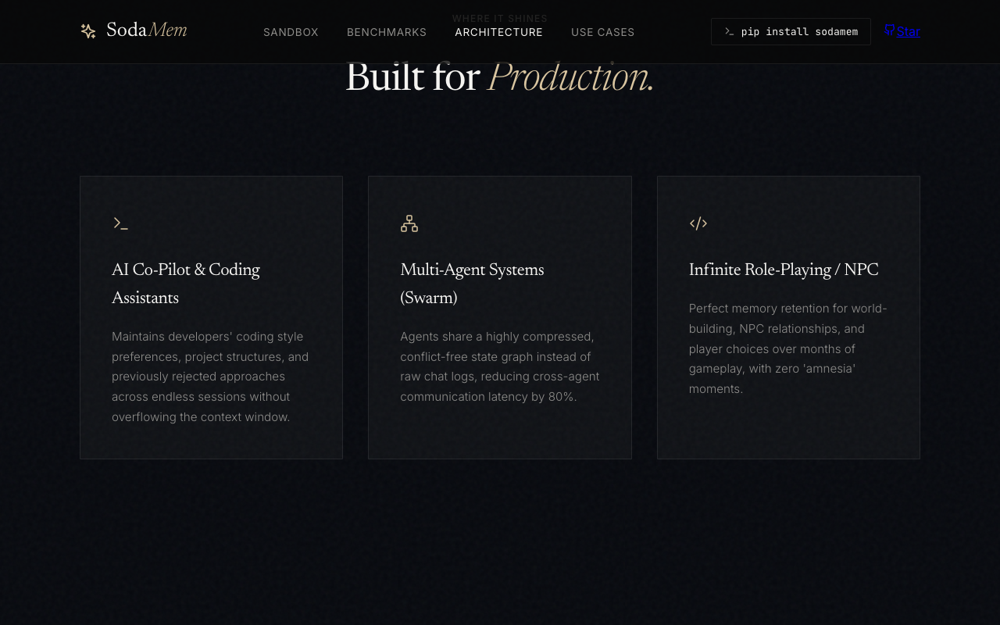
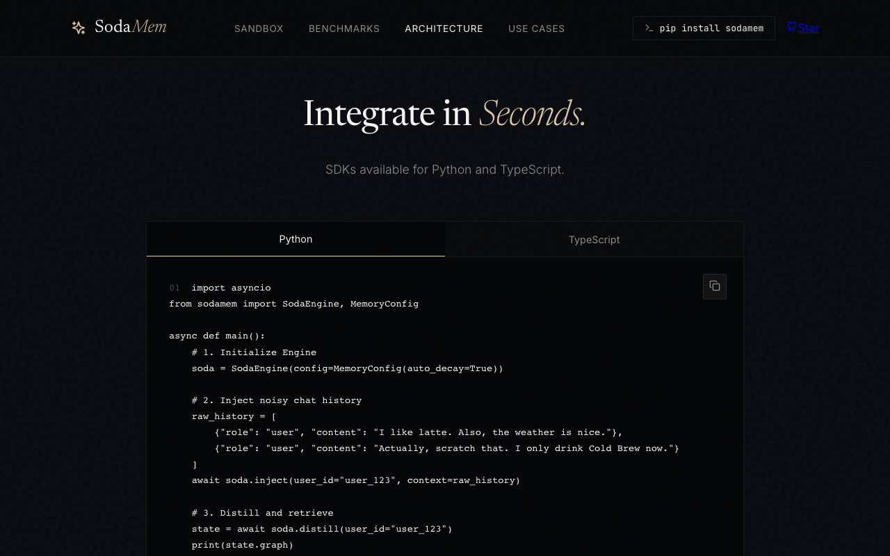
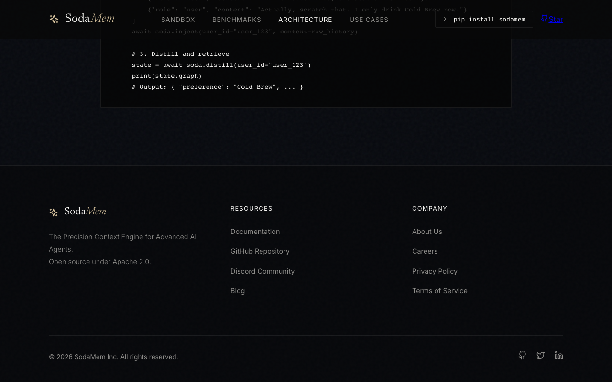
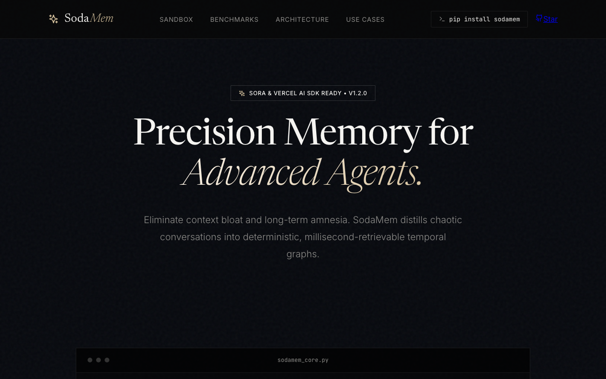
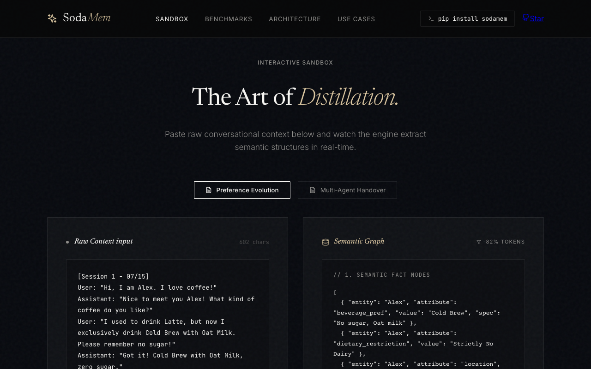
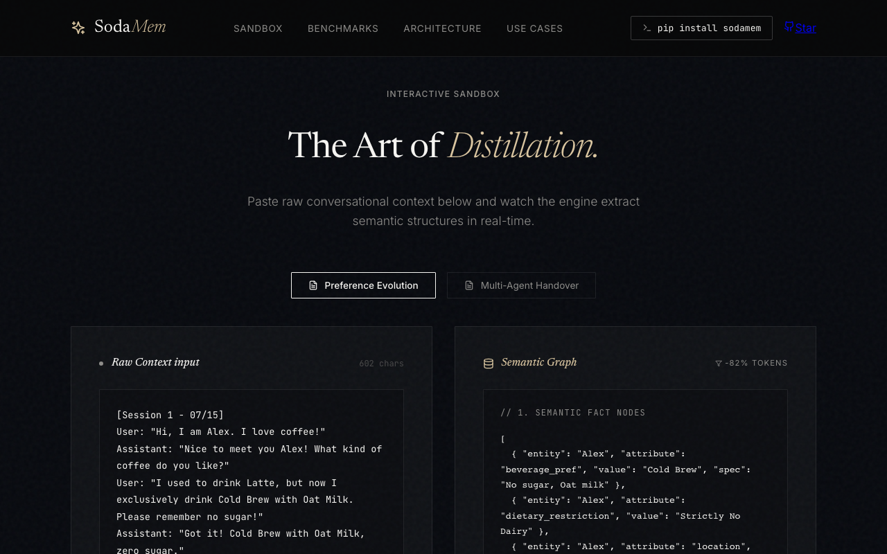
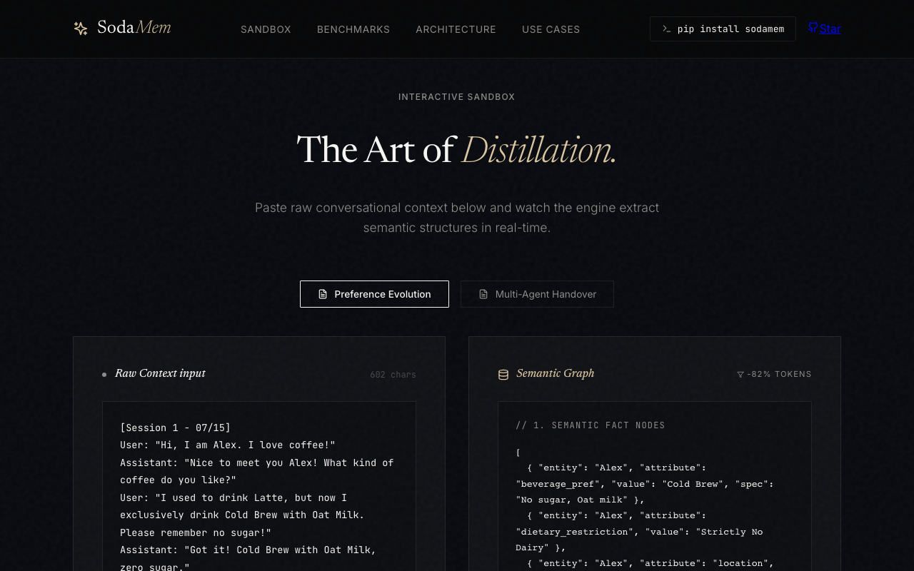

Think aloud: Precision Memory for AI agents, pip install sodamem right in the header - that's promising for a quick eval. Let me check Architecture before docs since it's more prominent than the footer link.
URL/context: https://sodamem.com/

Think aloud: Architecture section is neat marketing but I still need real docs, not just diagrams. Footer shows a Documentation link - let's see if that actually goes somewhere useful.
URL/context: https://sodamem.com/#features

Think aloud: Built for Production section coming up, but I still haven't hit real docs or a getting-started guide. Let's keep scrolling to the footer.
URL/context: https://sodamem.com/#features

Think aloud: Continue scrolling toward the footer to locate a documentation link or getting-started guide.
URL/context: https://sodamem.com/#features

Think aloud: a code sample for Python and TypeScript SDKs right here - that's useful. But I want the actual docs link, not just a marketing snippet.
URL/context: https://sodamem.com/#features

Think aloud: There it is - Documentation link in the footer. Let's see if it's real docs or just another landing page.
URL/context: https://sodamem.com/#features

Think aloud: Rather than typing addresses, I want to get there through the menus, tabs, and links on the page — I should look around, and scroll if needed.
URL/context: https://sodamem.com/#

Think aloud: Rather than typing addresses, I want to get there through the menus, tabs, and links on the page — I should look around, and scroll if needed.
URL/context: https://sodamem.com/#

Think aloud: Documentation link keeps dumping me back to the hero — no actual docs page loaded. That's a bad sign for a dev tool. Let me try Sandbox instead, maybe that's where the real getting-started content lives.
URL/context: https://sodamem.com/#

Think aloud: The sandbox actually works now — real input/output demo with token reduction stats. That's solid evidence of what it does. But footer Documentation, GitHub Repo, Discord, Blog all link to '#' and Star just goes to generic github.com, not a real repo. That's a huge red flag for an open source dev tool.
URL/context: https://sodamem.com/#sandbox

Think aloud: a Python tab down in the footer area — that might actually show real SDK code instead of another dead link. Docs link's been useless twice already, so let's try this instead.
URL/context: https://sodamem.com/#sandbox

Think aloud: a Python option in the footer near the sandbox — let's see if that finally shows actual install/integration code instead of another dead link.
URL/context: https://sodamem.com/#sandbox

Think aloud: I've clicked Documentation twice, GitHub and Blog are the same dead anchor pattern. For a dev tool that's a dealbreaker — I can't verify pip install sodamem is even a real package without a working repo link.
URL/context: https://sodamem.com/#sandbox